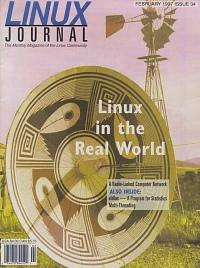

Shutdown Archive web server
Search:
Linux Journal
Issue #34/February 1997

Features
NF/Observatory Networking with Linux
by Fred Treasure
An observatory in New Mexico uses Linux to network the computers providing remote control of its optical telescope.
xldlas - A Program for Statistics
by Thor Sigvaldason
Unable to find a program for doing simple statistical choresthat worked on Linux, the author decided to write one.
What is Multi-Threading?
by Martin McCarthy
A primer on multi-threading: the process whereby linux manages several tasks simultaneously.
News & Articles
A Comparison of Xemacs and GNU emacs
by Larry Ayers
Introducing Real-Time Linux
by Michael Barabanov and Victor Yodaiken
At Last, An X-Based vi
by Dan Wilder
XBanner: Making XDM More Attractive
by Amit Margalit
Graphing with lout
by Michael Hall
WATCHDOG: The Linux Software Daemon
by Michael Meskes
Reviews
Product Review
System Commander
by Terrence Miller
Book Review
Practical UNIX and Internet Security, 2nd ed.
by Dan Wilder
WWWsmith
At the Forge
CGI Programming
by Reuven Lerner
Writing CGI Scripts in Python
by Michel Vanaken
CGI: Safety First
by Hans de Vreught
Columns
Letters to the Editor
Stop the Presses
DECUS and OSW
by Gary Moore and Phil Hughes
Linux Means Business
Practical Linux: A Bosnian Experience
by John Gorkos
New Products
Linux Gazette
Tips from the Graphic Muse
by Michael J Hammel
Best of Tech Support
by Gena Shurtleff
Archive Index
Shutdown Archive web server
Search:
Copyright © 1994 - 2018
Linux Journal
. All rights reserved.